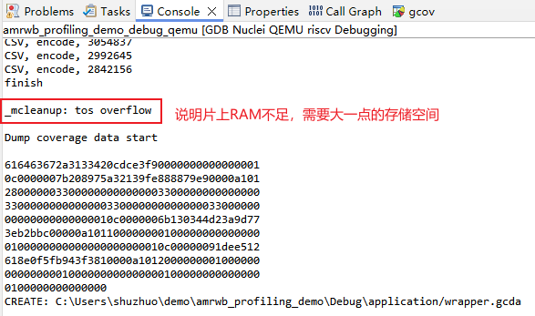
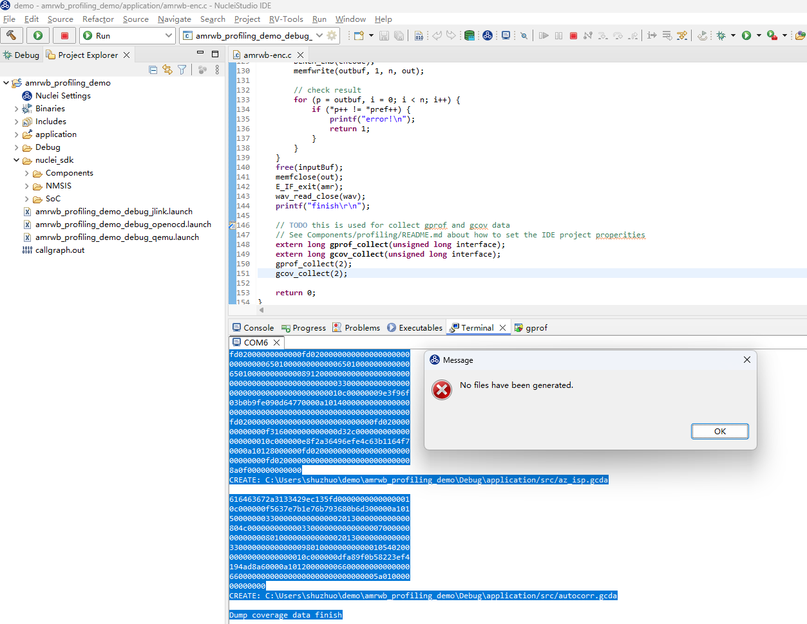
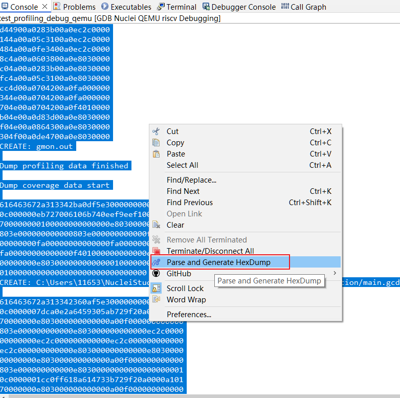
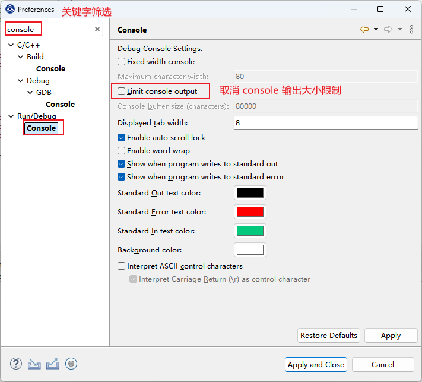
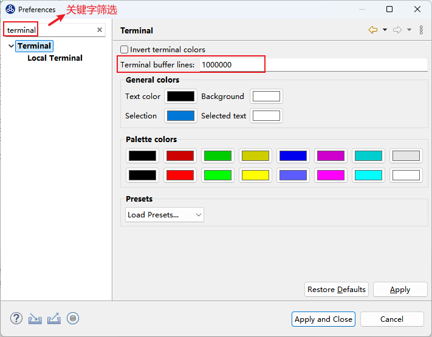
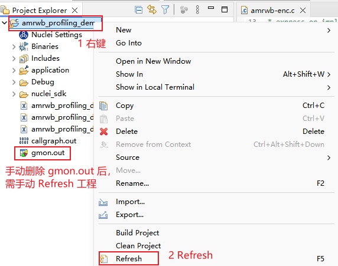

使用 Profiling 功能时可能遇到的一些问题¶
目前使用 Profiling 功能可能遇到一些问题，记录如下:
- 问题1：日志打印中报片上内存不足，没有充足内存来存放 gprof/gcov 数据
- 问题2：采用串口输出的方式收集数据，打印被冲掉，Console 或 Terminal 收集的数据不全，导致数据解析失败，弹出
No files have been generated错误弹框 - 问题3：删掉
gmon.out文件，再次解析时，弹出No files have been generated错误弹框
问题1：日志打印中报片上内存不足，没有充足内存来存放 gprof/gcov 数据¶
gprof/gcov data 需要存到片上内存上，占用内存的大小与用例规模有关(几十到几百KB不等)，需要确保片上内存足够大。

解决方案¶
首先需要确认软件配置的内存大小与硬件实际大小相匹配（ilm/sram/flash/ddr/），否则需要适配软件链接脚本内存布局：
比如，如果是 DOWNLOAD=ilm 模式下载，可以按硬件的 ilm 与 dlm 大小适配。
对于 nuclei sdk 0.6.0 版本，修改的文件为nuclei-sdk/SoC/evalsoc/Board/nuclei_fpga_eval/Source/GCC/gcc_evalsoc_ilm.ld
INCLUDE evalsoc.memory
MEMORY
{
ilm (rxa!w) : ORIGIN = ILM_MEMORY_BASE, LENGTH = ILM_MEMORY_SIZE
ram (wxa!r) : ORIGIN = DLM_MEMORY_BASE, LENGTH = DLM_MEMORY_SIZE
}
如果 DOWNLOAD=ilm 模式内存不足，可以使用内存大一点的下载方式（如 DOWNLOAD=ddr）。
问题2：Console 或 Terminal 收集的数据不全导致数据解析时失败¶
在 NucleiStudio 2024.06 中，当选择使用串口输出的方式使用 Profiling 功能时，可能使用 Parse and Generate Hexdump 解析数据时
弹出 No files have been generated 错误弹框，最后没有生成对应的 gmon.out 文件或者 *.gcno 文件。这可能是因为串口数据被冲掉，导致数据不完整从而解析失败

确认方法：
需确保串口开始时的打印没有被冲掉，参考Nuclei Studio使用Profiling功能进行性能调优举例

解决方案¶
因为在Console或者Terminal中，对输出的内容条数有限制，当输出的内容长度超过限制时，前面的内容会被冲掉，导致内容不完整，这样会解析失败。
需要调节 Console 或 Terminal 输出大小限制，确保数据没有被冲掉。
- 建议将Console中输出内容条限修改为不受限制。
Window->Preference 进入如下界面：

- 建议将Terminal中输出内容条限修改为一个较大的值。
Window->Preference 进入如下界面：

问题3：删掉 gmon.out 文件，再次解析，弹出 No files have been generated 错误弹框¶
手动删掉工程文件夹下的 gmon.out 文件，再次解析时出现 No files have been generated 的错误弹框
解决方案¶
手动删掉 gmon.out 文件后，需要手动刷新一下工程。
